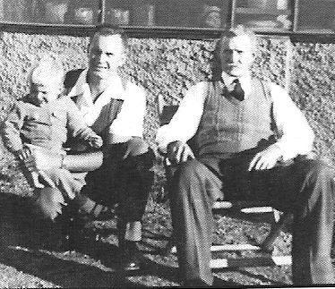

|
087b. b6.c4.d1.e5.f5. Jan Sarel Marthinus Henning *21-4-1888 en sy eerste vrou, Anna Catharina (gebore Kleynhans) *20-11-1890 en hul oudste twee kinders, Willem Hendrik *24-4-1910 (g1) en Cecilia Jacoba *17-5-1912 (g2)
Beskou lys van mense op foto
|
 |
Drie geslagte met die naam Jan Sarel Marthinus: b6.c4.d1.e5.f5.Oupa Jan Sarel Marthinus *21-4-1888, sy seun Jan Sarel Marthinus (g6) *14-9-1925 en kleinseun Jan Sarel Marthinus (h2) *24-10-1951
Beskou lys van mense op foto